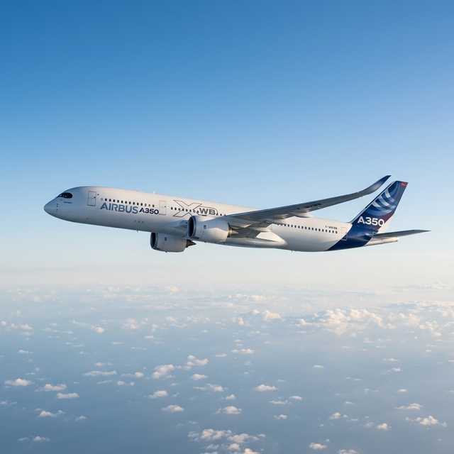
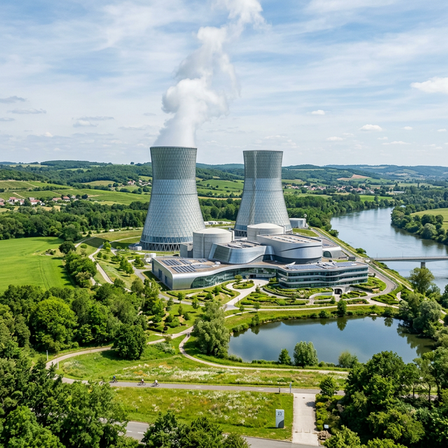

Indicadores Gerais
Capital do País
Paris
Área Territorial
643.801 km²
População Total
68,4 Mi
PIB Nominal
US$ 3,2 Tri
Base Industrial

Excelência Industrial
A França mantém uma base fabril diversificada, liderando setores tecnológicos críticos e garantindo soberania econômica através da inovação constante.
Setores Estratégicos
- Aeroespacial Líder Mundial
- Automotivo Renault / Peugeot
- Energia Nuclear Eletricidade Limpa
- Artigos de Luxo Moda / Perfumes
- Agroindústria Vinhos / Queijos
- Bélico Defesa Avançada
Poderio Econômico
A 7º Maior do Mundo
Com um Produto Interno Bruto (PIB) nominal estimado em US$ 3,2 Trilhões, a França se consolida historicamente entre as maiores potências econômicas globais.
No cenário continental, ela representa a 2ª maior economia da União Europeia, preenchendo o pilar fundamental do bloco junto à Alemanha, liderando sobretudo em indústrias de alto valor agregado como aviação civil, bens de luxo, defesa e farmacêutica.

Curiosidade Industrial
Você sabia que a França "exporta" eletricidade? Clique para ver.
O Legado Industrial Francês
1. Origens e Colbertismo
A industrialização francesa tem raízes no século XVII com Jean-Baptiste Colbert. Ele promoveu o Colbertismo, uma forma de mercantilismo que incentivava manufaturas estatais de luxo (como tapeçarias e cristais), estabelecendo a reputação francesa de sofisticação que dura até hoje.
2. A Revolução e as Ferrovias
Após a Revolução Francesa unificar o mercado nacional, o século XIX trouxe a expansão das ferrovias. Sob Napoleão III, a França viveu sua arrancada metalúrgica, conectando carvão e ferro e criando uma malha logística que impulsionou a indústria pesada.
3. Belle Époque e Inovação
No início do século XX, a França foi pioneira no automobilismo e aviação. Empresas como Renault e Citroën surgiram aqui, transformando o país em um centro global de inovação tecnológica e design industrial de ponta.
4. Os Trinta Gloriosos
O período entre 1945 e 1975 (Les Trente Glorieuses) marcou o auge do crescimento francês. Foi nessa época que o país investiu massivamente em infraestrutura nuclear e criou a Airbus, consolidando sua posição como potência tecnológica mundial.
Por que a França?
Escolhemos a França por sua trajetória industrial única. Diferente de outros países que focaram apenas em massa, a França sempre priorizou o valor agregado e a sofisticação, conseguindo ser competitiva desde os reatores nucleares e caças militares até a alta-costura e gastronomia de luxo.